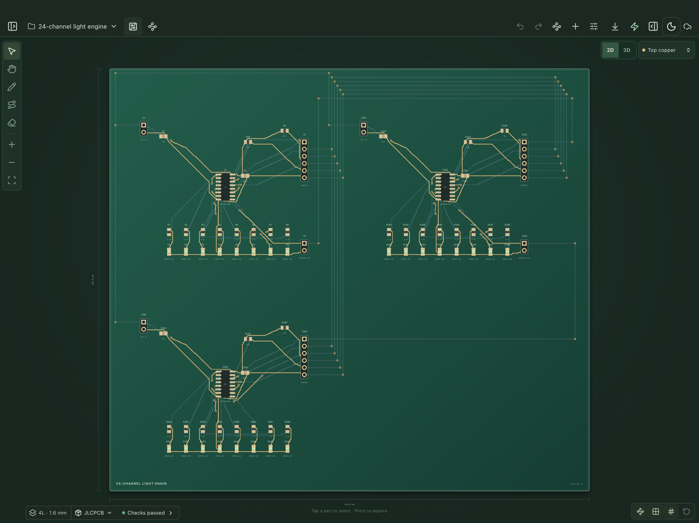
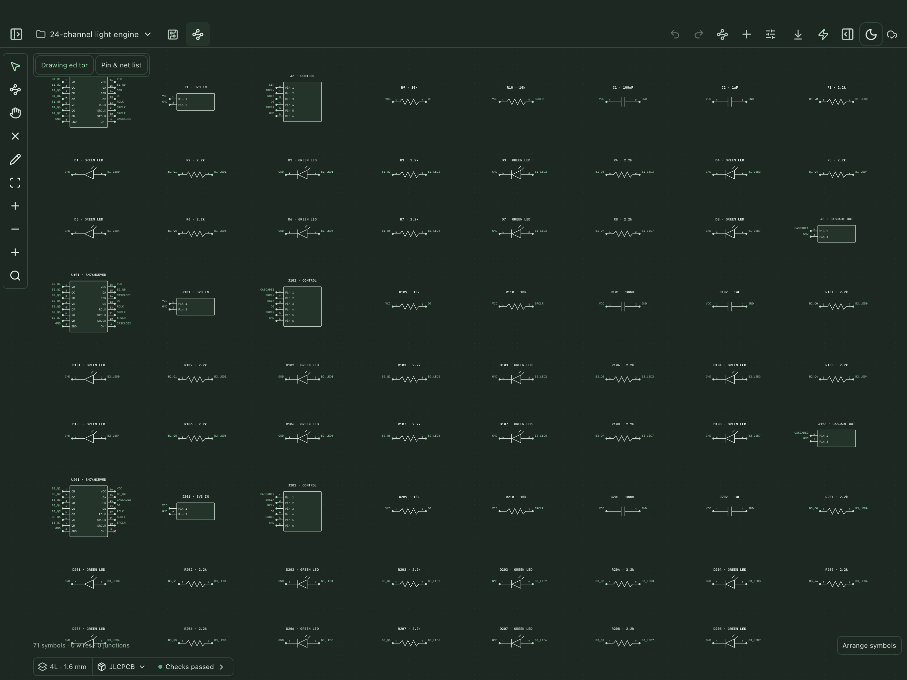

Draw the circuit.
Create and edit schematics, move and rotate symbols, wire pins and add junctions. Apple Pencil edits on supported iPads while fingers navigate.
Create circuits with Apple Pencil. Place and route your board. Run independent PCB design-rule checks and export for fabrication. Add AI for design assistance, datasheet research and component discovery.

A connected design workflow, from symbols and nets to copper and fabrication files. Your local CAD workspace runs on the device without a Mac or server.
Create and edit schematics, move and rotate symbols, wire pins and add junctions. Apple Pencil edits on supported iPads while fingers navigate.
Manual and automatic trace routing across 2, 4, 6 or 8 layers. Edit widths, add through vias and refill board-wide ground or power pours.
Run the independent Vibe PCB engine locally for clearance, connectivity and geometry checks. Review findings before exporting your current revision.
Optional online AI proposes design changes, searches public datasheets and finds JLCPCB stock references. Download supported KiCad and EasyEDA footprints into your project library.
Save Gerbers, drills, BOM, placement files, editable KiCad PCB, generic-symbol KiCad schematics, SVG and project JSON. Use JLCPCB or generic manufacturer export presets and independently review the files.
Import supported KiCad documents as editable converted copies. Keep projects and chat locally, restore recovery points and save independent backups to Files.

Edit the circuit yourself or ask a connected AI to propose supported changes. Connect OpenAI, Claude, Grok or a compatible provider using your own API key. Review proposals or enable auto apply; board validation and Build checks still apply.
$39.99 USD · one time
Local schematic and PCB tools, routing, native DRC and export are included. No AI account is required for local CAD.
Bring your own supported provider key; AI usage is billed separately by that provider. Research budgets are adjustable. Apple Basic AI offers limited, read-only help on compatible devices when available.
Pre-release product. Vibe PCB is a working name and may change. Public availability is pending release qualification and distribution review. ChatGPT subscription sign-in is not promised for the public release.
Independent checking covers supported copper geometry, connectivity and project parity. Arbitrary KiCad rules, creepage, differential-pair, silkscreen and solder-mask constraints are not evaluated.
Rectangular 12–200 mm boards, up to 128 components and 1024 pads, top-side components and through vias. Board-wide pours use thermal or solid connections. Converted KiCad imports have restrictions; other boards can be inspected read-only. Lossless native KiCad round-trip, arbitrary polygon-zone editing, controlled impedance, differential-pair tuning, blind/buried vias and electrical simulation are outside the current scope. DRC does not establish circuit correctness. Verify pinouts, ratings, footprints, fabrication stack-up, Gerbers, drills and assembly rotations before ordering. Stock references do not reserve parts or place orders. See Support for current limits.